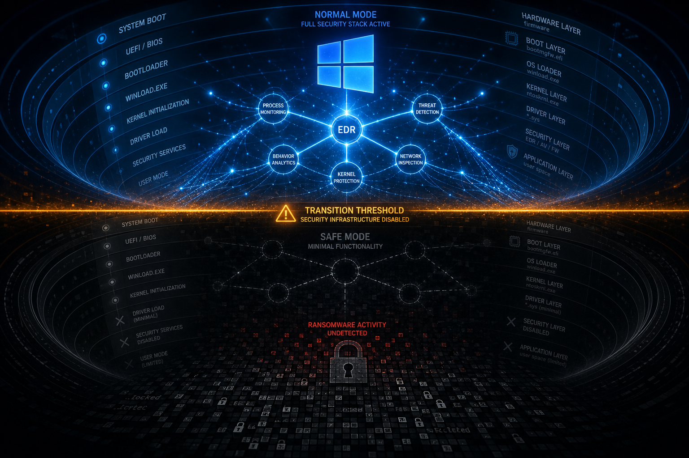
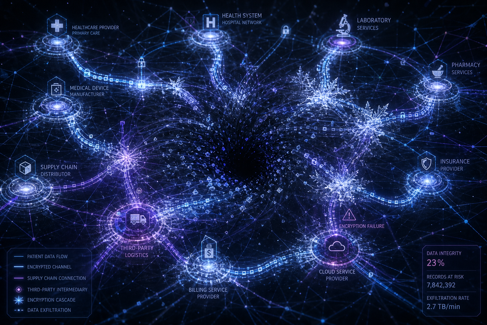
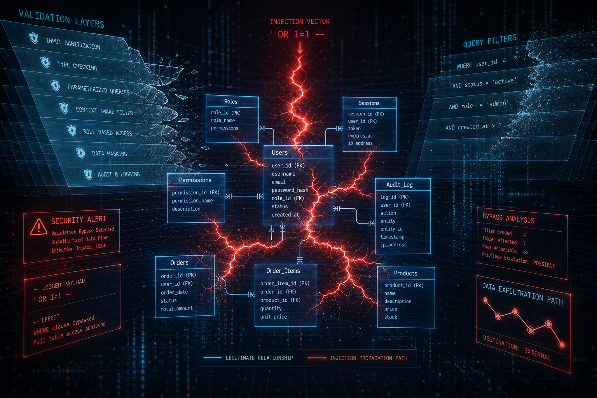
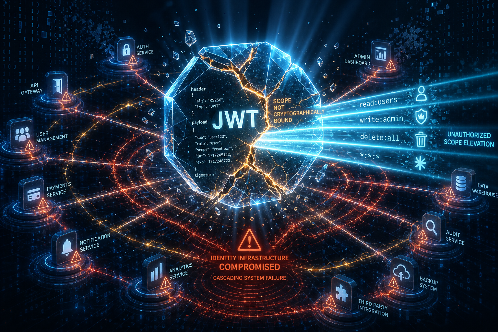

Bypassing Reverse Proxies: Analyzing Path-Handling and Header Normalization Flaws in Oracle WebLogic Server Proxy Plug-in (CVE-2026-21962)
CVE-2026-21962 exposes a critical architectural vulnerability in Oracle WebLogic Server deployments protected by reverse proxies, enabling unauthenticated attackers to bypass authentication controls through HTTP request manipulation. The vulnerability stems from incompatible path canonicalization and header interpretation standards between proxy and backend systems—attackers craft requests that pa
Read more →Bypassing Argument Validation: Analyzing Command Injection in Chainlit's Unauthenticated MCP Endpoint (CVE-2026-45018)
Chainlit versions prior to 2.12.1 contain a critical unauthenticated command injection vulnerability in the Model Context Protocol (MCP) stdio endpoint that enables remote code execution without authentication or input validation. The vulnerable endpoint accepts unsanitized shell command parameters directly from network requests, allowing attackers to inject arbitrary system commands with the priv
Read more →Escaping the Sandbox: Analyzing Boundary Isolation Flaws in NVIDIA OpenShell for Linux (CVE-2026-65093)
A critical privilege escalation vulnerability in NVIDIA OpenShell for Linux (CVE-2026-65093) permits authenticated local users to escape containerized execution contexts and escalate privileges to root-equivalent access. The flaw exploits an uncontrolled search path element within the sandbox boundary isolation mechanism, directly threatening the security assumptions underlying multi-tenant GPU co
Read more →Forging Enterprise Access: Analyzing JWT Validation and Type Instantiation Flaws in Microsoft SharePoint (CVE-2026-55040, CVE-2026-63520)
Two critical vulnerabilities in Microsoft SharePoint Enterprise Server—CVE-2026-55040 and CVE-2026-63520—enable unauthenticated attackers to forge valid JSON Web Token (JWT) credentials and bypass access controls by exploiting fundamental flaws in token validation logic and improper input handling. Active exploitation has been observed in targeted campaigns. Organizations using SharePoint Server 2
Bypassing Authentication Gateways: Analyzing SAML Action Processing Flaws in Citrix NetScaler ADC & Gateway (CVE-2026-19490)
CVE-2026-19490 presents an imminent threat to enterprise authentication infrastructure through a critical flaw in Citrix NetScaler ADC and Gateway SAML processing logic. The vulnerability permits unauthenticated remote attackers to craft malicious SAML assertions that bypass multi-factor authentication controls and grant direct administrative access to protected resources without requiring valid c
Poisoning the CMDB: Analyzing PHP Object Injection in Combodo iTop Service Management (CVE-2026-40877)
Combodo iTop, a widely deployed IT service management platform functioning as the configuration management database (CMDB) backbone for enterprise IT operations, contains a critical remote code execution vulnerability (CVE-2026-40877) requiring no authentication. The flaw stems from unsafe PHP object deserialization that permits attackers to execute arbitrary code, corrupt CMDB data integrity, and
Compromising Zero Trust: Analyzing Remote Code Execution in Zscaler Client Connector (CVE-2026-59568)
The discovery of CVE-2026-59568 in Zscaler Client Connector represents a critical failure in zero trust architecture by enabling unauthenticated remote code execution through improper input validation at the endpoint enforcement layer. This vulnerability allows threat actors to achieve arbitrary code execution on defended endpoints without authentication, user interaction, or network access restri
Breaking Container Boundaries: Analyzing Path Traversal in Canonical LXD's Template Processing (CVE-2026-66897)
CVE-2026-66897 represents a significant erosion of container boundary enforcement within Canonical's LXD platform. A path traversal vulnerability in the template processing layer permits authenticated local users to traverse filesystem hierarchies and access host system resources, effectively circumventing container namespace isolation. This vulnerability affects organizations deploying LXD in mul
Escaping Storage Boundaries: Analyzing Path Traversal and Remote Code Execution in GitLab's Package Registry (CVE-2026-10053)
CVE-2026-10053 represents a critical convergence of path traversal and unsafe deserialization vulnerabilities within GitLab's package registry infrastructure, affecting all self-managed Community Edition (CE) and Enterprise Edition (EE) installations prior to version 19.2.2. Authenticated attackers can exploit inadequate input validation in package upload handlers to escape filesystem boundaries,
Compromising the Identity Plane: Analyzing Deserialization Flaws in Microsoft Entra ID (CVE-2026-69836)
Microsoft Entra ID contains a critical remote code execution (RCE) vulnerability (CVE-2026-69836) that enables unauthenticated attackers to execute arbitrary code within the identity authentication infrastructure. This is not a perimeter or application-layer vulnerability—it is a direct compromise of the identity plane itself, the foundational trust mechanism securing access to Microsoft 365, Azur
Unauthenticated Command Injection: Analyzing OS Command Execution Flaws in Zimbra Collaboration Suite (CVE-2026-73570)
CVE-2026-73570 represents a critical authentication bypass vulnerability enabling unauthenticated remote attackers to execute arbitrary operating system commands on Zimbra Collaboration Suite deployments worldwide. The vulnerability combines OS command injection flaws with insufficient input validation in the web interface, permitting immediate system compromise without credential acquisition or s
Circumventing the Authentication Gateway: Analyzing Alternate Path Bypass Flaws in Citrix NetScaler ADC and Gateway (CVE-2026-19490)
CVE-2026-19490 represents a critical authentication bypass vulnerability affecting Citrix NetScaler ADC and Citrix Gateway deployments worldwide. The vulnerability enables unauthenticated, remote attackers to circumvent primary authentication controls by exploiting alternate request pathways, potentially granting direct access to protected backend systems and administrative interfaces without cred
Traversing the Model Plane: Analyzing Path Traversal Vulnerabilities in NVIDIA Triton Inference Server (CVE-2026-47627)
NVIDIA Triton Inference Server CVE-2026-47627 represents a critical, unauthenticated path traversal vulnerability enabling direct file system access and denial-of-service conditions without privilege escalation, user interaction, or authentication requirements. Organizations deploying NVIDIA Triton in production machine learning environments—particularly across cloud, Kubernetes, and hybrid archit
Exfiltrating Cluster Credentials: Analyzing Vault Token Leakage in Ansible Automation Platform (CVE-2026-12564)
A critical vulnerability in the HashiCorp Vault plugin for Red Hat Ansible Automation Platform enables authenticated users with standard privileges to extract Vault tokens directly from plaintext job execution logs. In misconfigured environments, unauthenticated access is possible. These tokens grant unmediated access to Kubernetes service accounts, secrets management systems, and downstream infra
Poisoning the Inference Pipeline: Analyzing Unsafe Pickle Deserialization in LMDeploy's Disaggregated Serving (CVE-2026-76850)
The deployment of large language models through disaggregated serving architectures has introduced a critical vulnerability that fundamentally undermines the integrity of AI inference pipelines at scale. CVE-2026-76850 exploits unsafe Python pickle deserialization in LMDeploy's peer connector mechanism, enabling unauthenticated remote code execution on inference worker nodes. An estimated 12,000+
 Aug 20, 2026
Aug 20, 2026
Exfiltrating Cloud Metadata: Analyzing Server-Side Request Forgery via Webhook Authentication Bypass in MLflow (CVE-2026-64849)
A critical Server-Side Request Forgery (SSRF) vulnerability in MLflow's webhook authentication mechanism permits unauthenticated threat actors to bypass security controls and forge HTTP requests directly to cloud metadata services. Organizations operating MLflow in cloud-native environments face immediate risk of service account credential exfiltration, lateral movement into broader cloud infrastructure, and compromise of centralized model artifact repositories.
 Aug 20, 2026
Aug 20, 2026
Bypassing Email Verification: Analyzing Authentication State Validation Flaws in Keycloak's Password-Reset Flow (CVE-2026-18963)
A critical vulnerability in Red Hat's Keycloak identity management platform enables attackers to bypass email verification controls during password-reset operations, permitting unauthorized credential modification without user confirmation. CVE-2026-18963 affects Keycloak deployments across enterprise authentication infrastructures and creates direct pathways to account takeover in federated identity environments. The flaw resides in the authentication state validation logic of the reset-credentials workflow, allowing unauthenticated threat actors to circumvent the primary control designed to confirm user identity during account recovery.
 Aug 20, 2026
Aug 20, 2026
Corrupting Storage Fabric: Analyzing Out-of-Bounds Write Flaws in Dell PowerStore SDNAS SMB/CIFS Handlers (CVE-2026-67271)
A critical out-of-bounds write vulnerability in Dell PowerStore T-series SDNAS (NAS-on-Flash) storage systems enables unauthenticated remote code execution through the SMB/CIFS protocol handler. CVE-2026-67271 (CVSS 9.8) permits direct compromise of enterprise storage infrastructure without authentication, creating pathways for data exfiltration, encryption-based extortion, and operational disruption. Organizations with externally-accessible or multi-tenant SDNAS deployments face heightened risk.
Pivoting Through Metadata: Analyzing Unauthenticated SSRF in MLflow's Webhook Endpoint (CVE-2026-64849)
A critical vulnerability in MLflow versions prior to 3.15.0 exposes machine learning operations infrastructure to remote exploitation through an unauthenticated webhook endpoint. CVE-2026-64849 allows attackers to execute Server-Side Request Forgery (SSRF) attacks without credentials, enabling internal network reconnaissance, cloud metadata service exploitation, and lateral movement into adjacent
Exposing Third-Party Access: Analyzing OAuth Token Leakage in Onyx AI Platform MCP Endpoints (CVE-2026-71424)
OAuth token leakage within Model Context Protocol (MCP) endpoints represents an emerging attack surface in enterprise AI platforms mediating third-party integrations. CVE-2026-71424, identified in the Onyx AI Platform, demonstrates how improperly secured authentication delegation mechanisms at the AI-application integration boundary enable threat actors to impersonate authenticated users and appli
Escaping Access Modifiers: Analyzing Property Overwrite Flaws in Scriban's TypedObjectAccessor (CVE-2026-73061)
Scriban, a lightweight template engine widely embedded in enterprise .NET applications, contains a critical access control bypass vulnerability (CVE-2026-73061) that permits direct manipulation of protected object properties through malformed template syntax. The vulnerability resides in the TypedObjectAccessor class, which fails to enforce C# access modifiers (private, protected, internal) during
Arbitrary Code Execution: Analyzing Remote Code Execution in SAP Commerce Cloud (CVE-2026-58231)
CVE-2026-58231 is a critical Remote Code Execution vulnerability affecting SAP Commerce Cloud that enables unauthenticated attackers to execute arbitrary code within cloud-hosted commerce environments. The vulnerability transitioned from theoretical to operational exploitation status within 72 hours of disclosure, with active attack campaigns confirmed across North American and European retail, logistics, and financial services sectors.
Executing Untrusted Code: Unsafe Deserialization in Ray AI Framework (CVE-2025-62593)
Organizations deploying Ray distributed computing frameworks face critical exposure to remote arbitrary code execution through CVE-2025-62593, which combines unsafe deserialization mechanisms with cross-site request forgery protection gaps. The vulnerability affects Ray versions prior to the patched release and threatens the integrity of machine learning pipelines, model training workflows, and enterprise AI platforms. Attackers can exploit this flaw to execute arbitrary code within distributed computing clusters without authentication, potentially compromising proprietary training data, ML model integrity, and downstream inference systems.
 Published Aug 18, 2026
Published Aug 18, 2026
Escalating Cluster Control: Analyzing Authorization Bypass in Red Hat Advanced Cluster Management (CVE-2026-66792)
Red Hat Advanced Cluster Management (ACM) contains a critical authorization bypass vulnerability enabling authenticated users to execute administrative actions on managed Kubernetes clusters without corresponding role authorization. Tracked as CVE-2026-66792 with a CVSS score of 8.8, this flaw allows privilege escalation across federated multi-cluster environments, directly undermining the access control hierarchies that organizations depend on for workload isolation and governance compliance.
Evolving Infrastructure Threats: Analyzing Gunra Ransomware TTPs and VDI Portal Bypass Mechanisms (AA26-222A)
Gunra ransomware represents an infrastructure-targeting threat that prioritizes Virtual Desktop Infrastructure (VDI) portal compromise as a primary ingress vector, leveraging extended dwell-time for reconnaissance and privilege escalation before deploying ChaCha20-based multithreaded encryption to maximize impact across virtualized environments. The threat spans critical infrastructure, healthcare, finance, and manufacturing sectors, with active operational cadence averaging 1–3 incidents per week.

Published Aug 17, 2026Evading Detection: Analyzing Safe Mode Exploitation in Akira Ransomware EDR Circumvention
Akira ransomware operators have operationalized Windows Safe Mode reboot sequences as a systematic method to forcibly disable Endpoint Detection and Response (EDR) solutions before deploying encryption payloads. This technique exploits a fundamental architectural characteristic of Windows Safe Mode rather than a discrete software vulnerability. When systems transition to Safe Mode, EDR kernel drivers and monitoring processes fail to load, creating a protection gap of 15–30 minutes during which ransomware can execute with minimal detection risk.
Escalating Privileges: Analyzing Use-After-Free Flaws in Microsoft Windows Ancillary Function Driver for WinSock (CVE-2026-68820)
A critical use-after-free vulnerability in Microsoft Windows Ancillary Function Driver for WinSock (AFD.sys) has entered active exploitation by advanced threat actors. CVE-2026-68820 enables unauthenticated local privilege escalation from unprivileged application contexts to kernel-level access, circumventing modern Windows security boundaries. Confirmed attribution to Lazarus Group operatives ind
Unauthenticated Admin Takeover: Analyzing SQL Injection in Metabase's Password Reset Endpoint (CVE-2026-72898)
A critical SQL injection vulnerability in Metabase's password reset endpoint enables unauthenticated threat actors to execute arbitrary SQL commands and reset administrative credentials without authentication. Exploitation requires a single HTTP request and grants immediate administrative access to Metabase instances and all connected data warehouses. Active exploitation has been confirmed in oper
Crashing the Perimeter: Analyzing Insufficient Error Handling in Cisco ASA and FTD SSL VPN Services (CVE-2026-20349)
A critical vulnerability in Cisco Adaptive Security Appliance (ASA) and Firepower Threat Defense (FTD) SSL VPN services enables unauthenticated remote actors to trigger denial-of-service conditions through malformed SSL/TLS handshake sequences. CVE-2026-20349 affects enterprise perimeter defense infrastructure across ASA versions 9.1–9.20.x and FTD versions 6.1–7.0.x, creating immediate risk to re
Escalating Privileges: Analyzing Use-After-Free Flaws in Microsoft Windows Ancillary Function Driver for WinSock (CVE-2026-68820)
A critical use-after-free vulnerability in Microsoft Windows Ancillary Function Driver for WinSock (AFD.sys) has entered active exploitation by advanced threat actors. CVE-2026-68820 enables unauthenticated local privilege escalation from unprivileged application contexts to kernel-level access, circumventing modern Windows security boundaries. Confirmed attribution to Lazarus Group operatives ind
Breaching the Perimeter: Analyzing Improper Authentication Logic in Fortinet FortiWeb (CVE-2026-26035)
Improper authentication logic in Fortinet FortiWeb exposes a critical vulnerability class affecting organizations dependent on Web Application Firewall deployments as primary perimeter security controls. CVE-2026-26035 enables unauthenticated or inadequately authenticated access to administrative interfaces, potentially allowing threat actors to bypass WAF protections, modify security policies, an
Compromising the Command Center: Analyzing Unauthenticated Command Injection in SonicWall GMS Dispatcher (CVE-2026-66147)
An unauthenticated command injection vulnerability in SonicWall's Global Management System (GMS) Dispatcher enables remote attackers to execute arbitrary operating system commands without credentials, positioning them to compromise all managed firewalls and security appliances enterprise-wide. CVE-2026-66147 represents a fundamental bypass of authentication controls in a critical infrastructure or
Disrupting Industrial Ethernet: Analyzing Unauthenticated Buffer Overflow Risks in PROFINET Protocol Stacks (CVE-2025-41769)
A critical unauthenticated buffer overflow vulnerability (CVE-2025-41769) in PROFINET protocol implementations enables remote attackers to execute arbitrary code on industrial control devices across manufacturing, energy, and critical infrastructure sectors. The vulnerability requires no authentication, no user interaction, and no elevated privileges, presenting an immediate threat to thousands of

Published Aug 12, 2026Targeting the Care Supply Chain: Analyzing Ransomware Encryption and PHI Exposure in AngMar Companies
The compromise of AngMar Companies, a critical healthcare supply chain intermediary, by the Interlock ransomware operation has exposed protected health information for 3.8+ million patients across multiple healthcare delivery networks. The incident marks a significant evolution in threat actor targeting strategy: rather than confronting well-defended clinical networks, threat actors exploited supp
Targeting Financial Services: Analyzing PII and Tax Data Exposure in Advanced Tax Solutions via Settra Ransomware
The August 2026 Settra ransomware campaign against Advanced Tax Solutions represents a deliberate operational pivot toward financially critical tax processing infrastructure. Confirmed exfiltration of personally identifiable information and tax documentation from an estimated 8,000+ individual and business taxpayer accounts, combined with dual-extortion mechanics (encryption plus public data discl
Targeting the Treatment Pipeline: Analyzing Ransomware Tactics Against Leafwell Telehealth Infrastructure
DireWolf ransomware operations against Leafwell, a cloud-native telehealth platform, exemplify a deliberate strategic shift by threat actors toward healthcare delivery models operating with minimal centralized security infrastructure. The incident disrupted prescription fulfillment, patient communication, and clinical scheduling across a platform serving thousands of distributed practitioners and

Published Aug 11, 2026Bypassing Query Validation: Analyzing SQL Injection via the @having Operator in Tencent APIJSON (CVE-2026-72565)
Tencent APIJSON, a widely adopted rapid API development framework, contains a critical SQL injection vulnerability (CVE-2026-72565, CVSS 9.8) enabling attackers to bypass input validation through the @having operator and execute arbitrary SQL without authentication. The vulnerability affects microservices architectures and data-driven platforms globally, with active exploitation confirmed in produ

Published Aug 11, 2026Escalating Permissions: Analyzing Access Token Scope Bypass in Fosrl Pangolin (CVE-2026-72564)
A critical authorization mechanism failure in Fosrl Pangolin's OAuth2 token validation framework permits authenticated users to escalate their access beyond provisioned permission scopes. CVE-2026-72564 exploits the absence of cryptographic binding between issued tokens and their assigned scope claims, allowing attackers to manipulate token permissions through application-layer validation gaps. Or
Commanding the Spacecraft: Analyzing Missing Authentication and Path Traversal in NASA fprime-gds (CVE-2026-72577)
CVE-2026-72577 exposes a critical authentication bypass and path traversal vulnerability in NASA's Flight Software Ground Data System (fprime-gds), enabling unauthenticated remote actors to inject arbitrary spacecraft commands and access restricted mission telemetry. The vulnerability affects HTTP service endpoints that interface with spacecraft commanding infrastructure, bypassing authentication
Predictable Randomness: Analyzing Weak PRNG Implementation in Crypto-JS WordArray.random() (CVE-2026-71851)
CVE-2026-71851 exposes a foundational cryptographic weakness in the widely-deployed Crypto-JS library, specifically in the WordArray.random() function used for generating randomness in key generation, nonce initialization, and salt creation. The vulnerability stems from reliance on inadequate entropy sources that produce predictable rather than cryptographically secure randomness. Because Crypto-J
Exposing Authentication Gaps: Analyzing Unauthenticated Token Disclosure in Meta Ads MCP (CVE-2026-48039)
Meta Ads Model Context Protocol (MCP) contains a critical authentication bypass vulnerability permitting unauthenticated attackers to obtain valid authentication tokens without credential submission or access control validation. Organizations integrating Meta advertising platforms through MCP implementations face immediate risk of advertising account compromise, unauthorized API access, campaign h
Bypassing Authentication: Analyzing Unauthenticated API Access in LightRAG (CVE-2026-61808)
LightRAG, a widely-adopted open-source retrieval-augmented generation framework, contains a critical authentication bypass vulnerability affecting all versions prior to the August 2026 patch release. The framework's core API endpoints lack authentication enforcement, permitting unauthenticated network-based access to knowledge bases, query execution contexts, and data manipulation functions. Activ
Unauthenticated Code Injection: Analyzing Remote Code Execution in IBM Langflow OSS (CVE-2026-9198)
IBM Langflow, a widely-deployed open-source platform for constructing and operationalizing large language model applications, contains a critical unauthenticated remote code execution vulnerability enabling arbitrary code execution without valid credentials. CVE-2026-9198 affects all unpatched Langflow installations regardless of network segmentation or access control implementation, presenting im
Injecting Workflow Commands: Analyzing Command Injection in PraisonAI GitHub Actions (CVE-2026-48168)
The discovery of CVE-2026-48168 in PraisonAI's GitHub Actions integration reveals a critical vulnerability in automated AI model deployment pipelines that enables arbitrary command execution within CI/CD runner environments. The flaw stems from insufficient input sanitization in workflow parameters, permitting attackers to inject malicious commands with runner-level privileges. Organizations deplo
Bypassing Authentication: Analyzing Unauthenticated RPC Code Execution in Nuxt DevTools (CVE-2026-71319)
CVE-2026-71319 exposes a critical vulnerability in Nuxt DevTools that permits unauthenticated attackers to execute arbitrary code through an improperly secured Remote Procedure Call (RPC) interface. The vulnerability combines missing authentication controls (CWE-306) with unsafe code evaluation (CWE-94), creating a pathway for remote code execution accessible to any network-adjacent threat actor w
Corrupting the Call Stack: Analyzing Buffer Overflow Flaws in OpenSIPS URI Construction (CVE-2026-45537)
OpenSIPS installations worldwide face immediate compromise risk through a critical buffer overflow vulnerability in URI construction routines that permits unauthenticated remote code execution with elevated privilege context. CVE-2026-45537 affects the Session Initiation Protocol (SIP) parsing stack across telecommunications carriers, VoIP service providers, and enterprise communications infrastru
Extracting Data in Silence: Analyzing Time-Based Blind SQL Injection in Cacti's ORDER BY Clause (CVE-2026-71287)
CVE-2026-71287 represents a critical vulnerability in Cacti network monitoring platforms that enables unauthenticated attackers to extract sensitive database contents through time-based blind SQL injection. The vulnerability exploits improper input validation in the ORDER BY clause, allowing threat actors to systematically enumerate databases by analyzing temporal response variations—a technique t
Securing Industrial Endpoints: Analyzing Multiple Vulnerabilities in Pilz IndustrialPI Systems (CVE-2026-43284, CVE-2026-46300, CVE-2026-31431)
Three concurrent critical vulnerabilities in Pilz IndustrialPI safety controllers create a convergent attack surface enabling remote code execution, authentication bypass, and denial-of-service exploitation against embedded safety systems deployed across manufacturing, pharmaceutical, and chemical processing facilities. The vulnerabilities expose a structural gap between legacy operational technol
Bypassing Query Sanitization: Analyzing SQL Injection Vulnerabilities in Sequelize ORM (CVE-2026-69240)
CVE-2026-69240 presents a critical SQL injection vulnerability in Sequelize ORM that bypasses query parameterization safeguards when processing Oracle Database dialect parameters. The vulnerability permits both authenticated and unauthenticated threat actors to inject arbitrary SQL commands, enabling data exfiltration, modification, and potential system compromise across enterprise Node.js applica
Executing Arbitrary Code: Analyzing Remote Code Execution in Adobe Campaign Classic (CVE-2026-48323)
CVE-2026-48323 represents a critical remote code execution vulnerability in Adobe Campaign Classic, enabling unauthenticated command execution across enterprise marketing automation infrastructure. Organizations operating unpatched Campaign Classic instances—versions prior to 8.4.7 and 7.3.5—face immediate risk of arbitrary code execution, customer database exfiltration, lateral network movement,
Corrupting Memory State: Analyzing Use-After-Free Vulnerabilities in Microsoft Excel (CVE-2026-62870)
CVE-2026-62870 represents a critical use-after-free vulnerability in Microsoft Excel that enables remote code execution through maliciously crafted spreadsheet files. The vulnerability exploits memory state corruption in Excel's object lifecycle management, creating direct pathways for threat actors to achieve code execution with only user interaction—typically document opening. Active exploitatio
 Published: August 3, 2026
Published: August 3, 2026
Injecting Malicious Queries: Analyzing SQL Injection Flaws in PyAthena's Parameter Formatting (CVE-2026-65321)
A critical SQL injection vulnerability in PyAthena's DefaultParameterFormatter component (CVE-2026-65321) permits unauthenticated attackers to inject arbitrary SQL commands into AWS Athena queries, potentially enabling unauthorized data exfiltration, modification, and service disruption across dependent analytics and ETL infrastructure. The vulnerability executes within the privilege context of the Athena service account, bypassing downstream application-level access controls.
 Published: August 3, 2026
Published: August 3, 2026
Forging Identity Claims: Analyzing JWT Token Validation Flaws in WooCommerce Social Login (CVE-2026-8457)
JSON Web Token (JWT) validation failures in WooCommerce Social Login (versions 2.8.7 and earlier) enable unauthenticated attackers to forge Apple ID authentication tokens and gain unauthorized account access to affected e-commerce stores. The vulnerability stems from missing cryptographic signature verification in the plugin's OAuth integration layer, allowing forged tokens to bypass authentication entirely without user interaction.
 Published: August 3, 2026
Published: August 3, 2026
Corrupting Clipboard Data: Analyzing Heap Overflow Risks in FreeRDP's CliprdrStream_Read Function (CVE-2026-68579)
FreeRDP, a widely deployed open-source Remote Desktop Protocol implementation, contains a critical heap buffer overflow vulnerability in its clipboard stream processing function that enables remote code execution without requiring user interaction. CVE-2026-68579 affects organizations across healthcare, financial services, and manufacturing sectors where FreeRDP serves as infrastructure for hybrid workforce remote access—particularly on Linux servers and containerized deployments. The vulnerability allows unauthenticated or low-privilege attackers to corrupt heap memory through maliciously crafted clipboard data, establishing a direct-execution pathway into systems managing session credentials and confidential communications.
 July 31, 2026
July 31, 2026
Breaching the Management Plane: Analyzing the High-Severity Directory Service and Syslog Flaws in VMware vCenter
Four critical vulnerabilities in VMware vCenter (CVE-2026-59310, CVE-2026-59309, CVE-2026-47876, CVE-2026-41703) enable attackers to bypass authentication mechanisms, manipulate audit logging, and establish administrative control over virtualized infrastructure without requiring initial valid credentials. Exploitation chains allow progression from unauthenticated network access directly to management plane compromise, affecting organizations across enterprise, healthcare, financial services, and government sectors.
 July 31, 2026
July 31, 2026
Bypassing OT Edge Protections: Analyzing Premature Firewall Termination in EV Infrastructure Systems (CVE-2026-44108)
A critical vulnerability in widely deployed EV charging controller systems enables unauthenticated attackers to bypass edge firewall protections through forced termination of firewall processes, creating direct pathways into operational technology networks without triggering alerts or forensic artifacts. CVE-2026-44108 affects Phoenix Contact CHARX-SEC 3000 controllers deployed across 47 U.S. states and numerous international markets, representing an estimated 12,000+ installations.
 July 31, 2026
July 31, 2026
Cisco Fixes High-Severity Static Credential Vulnerability in Secure Firewall Management Center
Cisco Secure Firewall Management Center (FMC) deployments contain exploitable hardcoded credentials embedded within authentication mechanisms, enabling unauthenticated administrative access to enterprise perimeter security infrastructure. The vulnerability persists across affected software versions without triggering standard audit logging during exploitation, creating a detection gap that complicates forensic investigation and exposes multi-tenant environments to cascading compromise.
 Published: July 30, 2026
Published: July 30, 2026
Template Engine Exploitation: Analyzing CWE-1336 and Velocity Injection Mechanics in CVE-2026-9177
CVE-2026-9177 represents a critical remote code execution vulnerability affecting SecureTransport MFT Gateway and systems leveraging Velocity template engine processing. The vulnerability enables unauthenticated attackers to inject malicious template syntax through file metadata, API parameters, or configuration fields, resulting in arbitrary command execution with application privileges. With a CVSS score of 9.8 and active exploitation confirmed within 48 hours of disclosure, this vulnerability demands immediate institutional response across network segmentation, detection engineering, and patch deployment.
 Published: July 30, 2026
Published: July 30, 2026
Overwriting the Stack: Analyzing Identity Association Handling Flaws in OpenWrt’s odhcpd Daemon
A critical vulnerability in OpenWrt's odhcpd DHCPv6 daemon exposes millions of edge-deployed devices—including ISP customer premises equipment, enterprise edge routers, and IPv6-native infrastructure—to unauthenticated remote code execution. CVE-2026-53921 exploits improper stack memory handling in the daemon's client identity association logic, enabling attackers to execute arbitrary code with daemon-level privileges through specially crafted DHCPv6 requests.
 Published: July 30, 2026
Published: July 30, 2026
Deeply Nested Payloads: Critical cJSON Parser Flaw Exposes Embedded Systems to Denial of Service
A critical vulnerability in the cJSON C library—a foundational parsing component embedded across millions of IoT devices, industrial controllers, and edge systems—enables remote denial-of-service attacks through deeply nested JSON payloads. The vulnerability allows unauthenticated actors to exhaust system resources and render services unavailable without authentication or privilege.
 Publication Date: July 29, 2026
Publication Date: July 29, 2026
Bypassing Input Sanitization: Analyzing CWE-78 Command Injection Risks in VeloCloud Orchestrator (CVE-2026-16812)
VeloCloud Orchestrator, the central control component for software-defined WAN infrastructure across enterprise networks, contains a critical command injection vulnerability (CVE-2026-16812, CVSS 9.8) enabling remote code execution with elevated privileges. The flaw stems from improper input sanitization in command-processing functions, permitting threat actors to execute arbitrary operating system commands on orchestrator appliances.
 Publication Date: July 29, 2026
Publication Date: July 29, 2026
Code Generation Failure: Analyzing CWE-94 Code Injection in Joomla’s Balbooa Forms (CVE-2026-65880)
CVE-2026-65880, a critical code injection vulnerability in Balbooa Forms—a widely-deployed Joomla extension—enables unauthenticated remote code execution across thousands of dependent installations. The vulnerability stems from improper input validation in dynamic form generation routines, allowing attackers to inject arbitrary PHP code without authentication, privilege escalation, or credential compromise. Threat intelligence confirms active exploitation attempts.
 Publication Date: July 29, 2026
Publication Date: July 29, 2026
Accelerating Tradecraft: Analyzing Nimbus Manticore’s Shift to AI-Coded Malware and AppDomain Hijacking
Nimbus Manticore, an Iranian state-aligned advanced persistent threat actor, has demonstrably integrated generative AI-assisted malware engineering with CLR/AppDomain hijacking techniques, marking a significant acceleration in both operational tempo and technical sophistication. The actor's shift toward AI-coded polymorphic malware variants reduces development cycles from weeks to days while simultaneously circumventing signature-based detection and traditional memory-defense architectures.
 Publication Date: July 28, 2026
Publication Date: July 28, 2026
Active Exploitation Alert: Fastjson 1.x Zero-Day RCE Threatens Spring Boot Applications (CVE-2026-16723)
A critical remote code execution vulnerability in Alibaba Fastjson 1.x has transitioned from theoretical proof-of-concept to active, in-the-wild exploitation targeting Spring Boot applications within 72 hours of public disclosure. CVE-2026-16723 achieves unauthenticated code execution on vulnerable systems without requiring external gadget-chain libraries, bypassing existing serialization-focused mitigations and signature-based detection mechanisms.
 Publication Date: July 28, 2026
Publication Date: July 28, 2026
Weaponizing Workplace Chat: How BlueDash Uses Microsoft Teams to Deploy Persistent Remote Access
Operation BlueDash represents a significant evolution in enterprise compromise tradecraft, demonstrating how threat actors weaponize legitimate workplace communication platforms—specifically Microsoft Teams—to deploy persistent remote monitoring and management (RMM) infrastructure. Between March and July 2026, the campaign targeted over 80 organizations across financial services, healthcare, technology, and manufacturing sectors, with detection latency averaging 47 days post-compromise.
 Publication Date: July 28, 2026
Publication Date: July 28, 2026
Operating in the Shadows: New MedusaHVNC Malware Hijacks Virtual Desktops for Covert Control
MedusaHVNC represents a significant escalation in malware stealth methodology by weaponizing Windows virtual desktop infrastructure to establish persistent command channels that operate independently of standard endpoint detection frameworks. Rather than executing within observable user sessions, the malware instantiates hidden virtual desktop environments where attackers maintain interactive access while remaining invisible to process monitoring, event logging, and user-session awareness tools.
 Publication Date: July 27, 2026
Publication Date: July 27, 2026
Auth Bypass in the Cloud: Improper Authentication Flaw Exposes Exchange Online Infrastructure (CVE-2026-56191)
Microsoft Exchange Online is affected by a critical authentication bypass vulnerability (CVE-2026-56191) that enables unauthenticated or low-privilege actors to gain direct access to organizational email infrastructure, calendar systems, and delegated resource management without valid credentials or multi-factor authentication. The vulnerability exploits improper credential validation mechanisms in Exchange Online's authentication layer and affects all Microsoft 365 tenants globally unless explicit mitigation controls are deployed.
 Publication Date: July 27, 2026
Publication Date: July 27, 2026
Bypassing the Console: Analyzing CWE-639 Authorization Logic Failures in OpenRemote CVE-2026-66013
OpenRemote versions prior to 1.26.2 contain a critical authentication bypass in the console registration API that allows unauthenticated actors to register administrative-level credentials and assume operational control of building automation systems. The vulnerability—rooted in improper authorization logic (CWE-639)—creates a direct pathway for threat actors to manipulate HVAC systems, access controls, and environmental monitoring without privilege validation or audit trails.
 Publication Date: July 27, 2026
Publication Date: July 27, 2026
Poisoning the Copilot: Critical M365 Deserialization Flaw Exposes Enterprise Tenants to RCE
CVE-2026-50517 represents a critical inflection point in cloud-native security architecture. A deserialization vulnerability in Microsoft 365 Copilot infrastructure enables authenticated attackers to execute arbitrary code within enterprise tenant boundaries, transforming AI-assisted productivity tools into lateral movement vectors. The vulnerability bypasses tenant isolation controls that organizations rely upon for data residency, compliance, and multi-tenant security posture.
 Publication Date: July 24, 2026
Publication Date: July 24, 2026
Browser-As-A-Proxy: New msaRAT Malware Routes Command-and-Control Through Chrome and Edge
A newly documented remote access trojan, msaRAT, marks a structural departure in how ransomware-affiliated tooling communicates with its operators. Rather than relying on obfuscated domains or fronted infrastructure to evade network detection, msaRAT eliminates direct malware-to-command-and-control traffic entirely. It hijacks a victim's own installed Chrome or Edge browser through the Chrome DevTools Protocol, then uses that browser to negotiate a WebRTC connection relayed through legitimate Cloudflare Workers and Twilio TURN infrastructure.
 Publication Date: July 24, 2026
Publication Date: July 24, 2026
Unearthing Legacy Risk: Analyzing CVE-2026-64600 and the RefluXFS Kernel Privilege Escalation
A nine-year-old race condition in the Linux kernel's XFS copy-on-write path, tracked as CVE-2026-64600 and named RefluXFS, allows an unprivileged local user to overwrite root-owned files and obtain persistent root access on default installations of major enterprise Linux distributions. Disclosed by Qualys Threat Research Unit on July 22, 2026, the flaw operates at the filesystem block-allocation layer, below where SELinux, kernel lockdown, seccomp, and container isolation are designed to intervene—meaning standard hardening controls do not stop it.
 Publication Date: July 24, 2026
Publication Date: July 24, 2026
Zero-Click Espionage: Russian APT Laundry Bear Exploit Target Zimbra Webmail for Silent Email Theft
Unit 42 has disclosed CL-STA-1114, a Russian state-nexus cyberespionage campaign—overlapping with activity tracked elsewhere as Void Blizzard, LAUNDRY BEAR, and TA488—that has exploited a stored cross-site scripting flaw in Zimbra Collaboration Suite's Classic UI, tracked as CVE-2025-66376, since at least July 2025.
 Publication Date: July 23, 2026
Publication Date: July 23, 2026
Unpatched Infiltration: UmiJS Zero-Day Vulnerability Exposes React Applications to Remote Execution
A critical zero-day vulnerability in UmiJS—a widely adopted React application framework powering enterprise, fintech, and SaaS environments—enables unauthenticated remote code execution through malicious payload injection during application build and runtime phases. Tracked as CVE-2026-16492, this vulnerability affects an estimated 40,000+ public repositories and creates a cascading supply chain exposure for organizations lacking build-process verification controls.
 Publication Date: July 23, 2026
Publication Date: July 23, 2026
Ghost in the Pipeline: Cross-Language Malware Tactics Behind PylangGhost and GolangGhost
Nation-state threat actors attributed to North Korea have deployed sophisticated remote access trojan (RAT) variants—PylangGhost (Python-based) and GolangGhost (Go-based)—through social engineering campaigns impersonating recruitment professionals. The dual-language malware architecture exploits structural gaps in traditional endpoint detection while leveraging interview-themed phishing to harvest institutional credentials.
 Publication Date: July 23, 2026
Publication Date: July 23, 2026
Project CAV3RN Expansion: New Framework Module Signals Escalated Threat Activity
Project CAV3RN represents a critical escalation in Iranian state-sponsored cyberespionage capability through the integration of modular command-and-control infrastructure that exploits legitimate enterprise communication channels—specifically Microsoft Outlook calendar functions and DNS tunneling protocols—to establish resilient C2 pathways resistant to traditional detection mechanisms.
 Publication Date: July 22, 2026
Publication Date: July 22, 2026
Unauthenticated Threat Vector: Analyzing the Critical CVE-2026-6875 Flaw in ServiceNow Infrastructure
CVE-2026-6875 represents a critical authentication bypass enabling unauthenticated remote code execution across ServiceNow deployments worldwide. The vulnerability permits threat actors to execute arbitrary code on affected instances without credential presentation, establishing direct pathways to IT Service Management databases, change management systems, and integrated enterprise infrastructure.
 Publication Date: July 22, 2026
Publication Date: July 22, 2026
Poisoning the Perimeter: Analyzing Qilin Ransomware’s Exploitation of PAN-OS Infrastructure
Qilin ransomware operators have weaponized a critical authentication bypass vulnerability in Palo Alto Networks GlobalProtect VPN infrastructure to establish unauthorized network access without credential validation, fundamentally altering ransomware attack sequencing from endpoint compromise to perimeter infrastructure exploitation.
 Publication Date: July 22, 2026
Publication Date: July 22, 2026
Default-Open Defenses: Analyzing the Hard-Coded Credential Vulnerability in PraisonAI Infrastructure
PraisonAI deployments across all versions prior to 0.31.2 contain hardcoded authentication credentials embedded directly into application source code and compiled binaries—a foundational infrastructure vulnerability that grants unauthenticated adversaries direct access to autonomous agent systems, backend orchestration layers, and dependent infrastructure without exploitation of secondary vulnerabilities.
 Publication Date: July 21, 2026
Publication Date: July 21, 2026
Implicit Trust Exploitation: Analyzing the SSRF Risk Cascade in Stoatchat Environments
CVE-2026-63306 is a critical Server-Side Request Forgery vulnerability affecting stoatchat infrastructure that permits unauthenticated attackers to bypass network segmentation and access internal services, metadata endpoints, and credential management systems. The vulnerability requires immediate remediation prioritization across all deployment contexts due to the absence of compensating controls in default configurations and confirmed in-the-wild exploitation activity. Immediate actionable guidance: Immediate action required: Inventory all stoatchat instances, confirm version status, and establish patch deployment sequencing within 24 hours.
 Publication Date: July 21, 2026
Publication Date: July 21, 2026
Inside HelloNet’s VPN Supply Chain Compromise
The HelloNet APT campaign represents a sophisticated supply chain attack leveraging compromised VIPNet update infrastructure to distribute malicious payloads across enterprise networks in financial services, government contracting, and critical infrastructure sectors. By injecting backdoors into legitimate security patches, HelloNet operators established persistent access while evading standard endpoint detection mechanisms.
 Publication Date: July 21, 2026
Publication Date: July 21, 2026
Inside the Windows Cloud Files Driver Privilege Escalation Threat
CVE-2026-58613 is a use-after-free vulnerability in the Windows Cloud Files Mini Filter Driver that enables authenticated users to escalate privileges to kernel mode. Unlike privilege escalation vulnerabilities typically requiring administrative access or sophisticated social engineering, this flaw is exploitable by any authorized user with filesystem access—a condition present across most cloud-synchronized environments where OneDrive, SharePoint Sync, or Microsoft Teams file integration is active.
 Publication Date: July 20, 2026
Publication Date: July 20, 2026
Fortinet FortiSandbox Zero-Days: Active Exploitation Under Federal Mandate
Two actively exploited zero-day vulnerabilities in Fortinet FortiSandbox have triggered an emergency federal patch mandate with a July 21, 2026 compliance deadline—creating a compressed 48-72 hour remediation window for federal agencies and critical infrastructure operators. CVE-2026-25089 (CVSS 8.8) and CVE-2026-39808 (CVSS 9.1) enable unauthenticated remote code execution and privilege escalation on appliances running versions 3.2.0 through 4.2.5.
 Publication Date: July 20, 2026
Publication Date: July 20, 2026
Windows LegacyHive Zero-Day: PROFSVC Local Privilege Escalation
A critical, previously undisclosed zero-day vulnerability in the Windows Professional Services (Profsvc.exe) component enables unauthenticated local privilege escalation to SYSTEM-level access, bypassing modern UAC controls and eliminating post-exploitation friction for adversaries. Tracked as LegacyHive, the vulnerability exploits memory corruption in the Profsvc service handler, requiring only local code execution or direct RPC endpoint access—no user interaction necessary.
 Publication Date: July 20, 2026
Publication Date: July 20, 2026
OpenSSL "HollowByte" Denial-of-Service Vulnerability: Minimal Payload, Maximum Impact
A denial-of-service vulnerability in OpenSSL servers has emerged as a significant asymmetric threat to production TLS infrastructure across enterprise, government, and critical infrastructure environments. Designated "HollowByte," the flaw enables remote attackers to trigger memory exhaustion and service degradation using a minimal 11-byte packet sequence, requiring no authentication or user interaction.
 Publication Date: July 17, 2026
Publication Date: July 17, 2026
AsyncAPI npm Package Compromise: Pwn Request Attack Injects Credential-Stealing Malware and Miasma RAT into Supply Chain
The AsyncAPI npm package ecosystem experienced a sophisticated supply chain compromise in July 2026 when threat actors exploited misconfigured GitHub Actions workflows to inject credential-stealing malware and the Miasma Remote Access Trojan directly into published packages consumed by tens of thousands of developers and enterprise build environments worldwide. The attack vector—a "Pwn Request"—leverages insufficient permission scoping in automated CI/CD pipelines by submitting malicious pull requests to repositories, enabling arbitrary code execution within privileged build contexts and package poisoning at publication time.
 Publication Date: July 17, 2026
Publication Date: July 17, 2026
Zero Dwell Time: Why Spirals Ransomware Requires a New Doctrine for Network Containment
Spirals ransomware represents a structural inflection in the ransomware threat landscape: a demonstrated capability to achieve full network encryption in under 24 hours from initial access. This compression of the attack lifecycle invalidates the dwell-time assumptions embedded in the majority of enterprise detection and response frameworks.
 Publication Date: July 17, 2026
Publication Date: July 17, 2026
Poisoning the Interface: How OkoBot’s Multi-Payload Architecture Hijacks Cryptographic Hardware
The OkoBot malware framework represents a structural escalation in financially motivated threat design, moving beyond single-payload credential theft toward a modular, multi-vector attack system purpose-built to compromise cryptocurrency users across wallet software, browser extensions, and clipboard environments simultaneously.
 Publication Date: July 16, 2026
Publication Date: July 16, 2026
CISA Issues Emergency Guidance as Microsoft SharePoint Vulnerabilities Expose Enterprise Networks
On July 14, 2026, CISA issued a formal hardening directive following confirmed active exploitation of three Microsoft SharePoint vulnerabilities affecting on-premises and hybrid deployments across enterprise and government environments. Threat actors have been observed chaining these vulnerabilities to progress from initial network access—including at least one unauthenticated vector—through privilege escalation to remote code execution, enabling credential theft, lateral movement, and ransomware staging within environments where SharePoint functions as both a document repository and an identity-integrated workflow platform.
 Publication Date: July 16, 2026
Publication Date: July 16, 2026
SonicWall SMA1000 Zero-Days Actively Exploited, Enterprise Remote Access Under Fire
CISA has issued a formal hardening directive following confirmed active exploitation of three chained Microsoft SharePoint vulnerabilities — including at least one vector that requires no authentication whatsoever — enabling threat actors to move from initial network access through privilege escalation to full remote code execution across on-premises and hybrid enterprise and government environments.
 Publication Date: July 16, 2026
Publication Date: July 16, 2026
LabubaRAT: Rust-Based RAT Exploits NVIDIA Brand Trust for Persistent Windows Compromise
A newly identified remote access trojan designated LabubaRAT is actively targeting Windows environments by impersonating legitimate NVIDIA system software. Discovered and analyzed by researchers at Blackpoint Cyber, the malware presents itself as `nvidia-sysruntime.exe` — a filename sufficiently plausible across any environment running NVIDIA GPU hardware that users, administrators, and endpoint security tooling may extend it implicit trust.
 Publication Date: July 15, 2026
Publication Date: July 15, 2026
Microsoft July 2026 Patch Tuesday: Convergent Threat Pressure, Wormable Authentication Exploitation, and the Limits of CVE-by-CVE Triage as an Operational Model
Executive Summary The July 2026 Microsoft Patch Tuesday release, delivered on July 14, 2026, presents a convergence of threat conditions that collectively exceed the risk profile of any individual component. The release addresses 127 CVEs across Windows and associated products, accompanied by more than 130 independently tracked Chromium-based Edge browser vulnerabilities — producing a combined exposure surface exceeding 257 vulnerabilities within a single patch cycle. Anchoring the release is CVE-2025-47981, a heap-based buffer overflow in the Windows SPNEGO Extended Negotiation protocol rated CVSS 9.8, classified as wormable, and requiring neither credentials nor user interaction to exploit across all supported Windows versions. Active exploitation of a Windows Defender race condition — CVE-2026-50656, designated RoguePlanet — with publicly available proof-of-concept code, combined with CISA-confirmed ransomware exploitation of a related prior disclosure designated BlueHammer, compounds operational urgency. An irreversible Kerberos RC4 authentication deprecation embedded in the same cumulative update introduces a distinct category of risk that cannot be addressed through rollback after patch application. Organizations should treat this release as a formal risk event requiring phased, sequenced deployment rather than routine monthly maintenance. One actionable takeaway: Verify that the July 9, 2026 out-of-band patch for CVE-2026-50656 has been applied to all Windows endpoints before deploying the July 14 cumulative update, and audit all Kerberos RC4 dependencies on domain controllers before applying that update to those systems.
 Publication Date: July 15, 2026
Publication Date: July 15, 2026
Windows NEGOEX Authentication Protocol Heap Overflow: Unauthenticated Remote Code Execution at the Pre-Authentication Boundary
A critical heap-based buffer overflow vulnerability in the Windows NEGOEX security extension — designated CVE-2025-47981 and scored 9.8 (Critical) under the Common Vulnerability Scoring System — exposes enterprise authentication infrastructure to unauthenticated, pre-authentication remote code execution across a broad range of Microsoft Windows deployments.
 Publication Date: July 15, 2026
Publication Date: July 15, 2026
When the Defender Becomes the Vector: RoguePlanet and the Privilege Escalation Risk Inside Microsoft's Malware Engine
Microsoft Defender's malware scanning engine — a deeply privileged, near-universally deployed system component — contains an elevation of privilege flaw that enables a locally authenticated user to achieve SYSTEM-level access, effectively weaponizing the security layer organizations rely upon most to detect and neutralize endpoint threats.
 Publication Date: July 14, 2026
Publication Date: July 14, 2026
Unauthenticated and Undetected: How Active Exploitation of Joomla Extension Vulnerabilities Is Exposing the Hidden Costs of Third-Party Plugin Governance
Two widely deployed Joomla extensions — iCagenda and Balbooa Forms — are the subject of a CISA Known Exploited Vulnerabilities (KEV) catalog designation confirming active, in-the-wild exploitation of critical unauthenticated remote code execution vulnerabilities. Because exploitation requires no credentials, no user interaction, and no insider access, any internet-facing Joomla installation running unpatched versions of these extensions represents a viable, immediately actionable target for threat actors operating across criminal, opportunistic, and potentially nation-state-aligned campaigns. The affected extensions serve functions — event calendar management and web form data collection — common across government portals, educational institutions, nonprofits, and commercial web properties, concentrating risk in sectors where Joomla adoption is historically high.
 Publication Date: July 14, 2026
Publication Date: July 14, 2026
Router Hygiene as Strategic Defense: How Russian State-Sponsored Actors Are Exploiting Network Edge Infrastructure — and What Organizations Must Do Now
On July 9, 2026, the NSA, CISA, and FBI issued a joint Cybersecurity Advisory documenting an active, sustained Russian state-sponsored campaign targeting network routing infrastructure across federal agencies, critical infrastructure operators, and enterprise environments. FSB-affiliated threat actors are exploiting Cisco Smart Install protocol misconfigurations, weak SNMP community strings, and known Cisco IOS vulnerabilities — at least one of which has been formally added to CISA's Known Exploited Vulnerabilities catalog — to achieve persistent, low-visibility footholds in high-value networks.
 Publication Date: July 14, 2026
Publication Date: July 14, 2026
When Trust Becomes a Weapon: OAuth Client ID Spoofing and the Identity-Layer Crisis in Microsoft Entra ID and M365 Environments
A technique documented by Proofpoint Threat Insight in July 2026 has elevated cloud identity security from a configuration concern to a structural architectural problem. Threat actors are exploiting a foundational trust assumption within the OAuth 2.0 authorization framework: that a declared Client ID corresponds to a legitimate, verified application. By injecting spoofed Client IDs drawn from Microsoft's own catalog of trusted first-party applications — including Microsoft Office, Azure CLI, and Microsoft Teams — adversaries are successfully impersonating those applications during authorization flows, bypassing Conditional Access Policies, and achieving persistent access to enterprise Microsoft 365 environments with minimal forensic footprint.
 Publication Date: July 13, 2026
Publication Date: July 13, 2026
Progress ShareFile Pre-Authentication RCE Chain — Vendor Directs Customer Server Shutdowns With No Patch Available
Progress Software has issued an emergency advisory directing customers operating on-premises ShareFile Storage Zone Controllers to shut down those systems immediately, citing a credible threat posed by a pre-authentication remote code execution vulnerability chain comprising two linked identifiers — CVE-2026-2699 and CVE-2026-2701. No patch is available, and Progress has not established a remediation timeline. As a parallel precautionary measure, Progress has taken its own cloud-managed Storage Zone Controller infrastructure offline.
 Publication Date: July 13, 2026
Publication Date: July 13, 2026
Critical Zimbra Classic Web Client Vulnerability Enables Malicious Script Execution in Authenticated Email Sessions
A critical cross-site scripting vulnerability in Zimbra's Classic Web Client has been publicly disclosed and patched, presenting an immediate and material risk to enterprise, government, and institutional organizations operating on-premises Zimbra email infrastructure. The flaw permits threat actors to inject and execute malicious scripts within authenticated user sessions — potentially through nothing more than a crafted email that a recipient previews or opens — without requiring system-level access or elevated privileges.
 Publication Date: July 13, 2026
Publication Date: July 13, 2026
When the Shield Becomes the Weapon: The `jscrambler` npm Supply Chain Compromise and the Weaponization of Developer Trust
The confirmed compromise of `jscrambler` npm package version 8.14.0 — a widely deployed JavaScript obfuscation and code protection utility — represents a precisely targeted software supply chain intrusion that embedded a malicious binary directly into the package's `preinstall` lifecycle hook. Upon execution of a standard `npm install` command, the binary triggered automatically, with no user interaction required, across developer workstations, CI/CD pipeline runners, Docker build containers, and staging environments.
Green Light, Red Network: How GodDamn Ransomware's PoisonX Driver Turns Enterprise Security Dashboards Into Liabilities
On July 9, 2026, researchers from Symantec's Threat Hunter Team published analysis of GodDamn, a ransomware variant deployed by the Hyadina threat group in active campaigns targeting North American enterprises — with documented concentration in the healthcare, manufacturing, and education sectors — since at least May 21, 2026. GodDamn is a functional rebrand of the Beast and Monster ransomware lineages, distinguished from its predecessors by its integration of PoisonX, a kernel-level driver carrying a legitimate Microsoft Windows Hardware Compatibility Publisher signature.
The Loud and the Silent: How Factory-v3 Loaders Deploy Vidar and XMRig as a Dual-Monetization Payload
A coordinated, high-volume malware campaign documented by Palo Alto Networks Unit 42 on July 8, 2026 is deploying paired payloads — Vidar Stealer version 2.0 and the XMRig Monero miner — through a Go-compiled loader framework designated Factory-v3. The campaign reaches endpoints through two primary delivery channels: search engine malvertising impersonating cracked software downloads, and compromised high-subscriber YouTube channels with pinned malicious file links.
Before the Money Moves: Operation First Light 2026 and the Closing Window for Financial Fraud Interdiction
On July 8, 2026, INTERPOL announced the culmination of Operation First Light 2026, a coordinated law enforcement action spanning 97 countries that resulted in 5,811 arrests, the execution of more than 10,211 search warrants, and the interception of approximately $293 million USD in fraudulently obtained fiat currency and digital assets. Investigators identified and disrupted more than 14,800 malicious bank accounts and electronic wallets used as cash-out infrastructure by transnational fraud syndicates.
 Published July 8, 2026
Published July 8, 2026
Manufactured Distance: How UAT-7810's ORB Network Infrastructure is Rewriting the Rules of Attribution
On July 7, 2026, Cisco Talos documented UAT-7810's continued expansion of the "LapDogs" Operational Relay Box network — a layered proxy architecture routing downstream espionage operations through compromised residential devices, paired with a new self-erasing malware suite that eliminates forensic artifacts upon detection.
The Gray Zone Under Fire: Manufacturing's Converging Ransomware & APT Crisis at the IT/OT Boundary
Telemetry compiled by CYFIRMA across Q2 2026 documents a sector-defining inflection point for global manufacturing: a sustained, elevated risk baseline of 6.7 out of 10 that shows no signs of cyclical relief, with Akira ransomware accounting for over 25% of global operations against the sector.
The Soft Target Doctrine: How the Texas Hearing Institute Breach Exposes Mid-Market Healthcare's Structural Security Deficit
In March 2026, the Texas Hearing Institute identified unauthorized access to its internal network following a compromise active since at least February 11. The Interlock ransomware syndicate exfiltrated 540 gigabytes of sensitive data before detection occurred, ultimately exposing 29,498 individuals.
 Published July 7, 2026
Published July 7, 2026
The Telemetry Trap: Deconstructing the Windows GDID Identity Stack & The Myth Of Network Anonymity
In July 2026, federal prosecutors unsealed charges against Peter Stokes, a 19-year-old alleged Scattered Spider operative apprehended in Finland, whose identification and location tracking were enabled in significant part by Microsoft telemetry logs mapping a persistent Windows device identifier — the Global Device Identifier — to his activity across multiple platforms.
 Published July 7, 2026
Published July 7, 2026
The JVM Contagion: Deconstructing Multi-Platform Persistence & Modular Expansion In Java-Based MaaS Pipelines
Security researchers at LevelBlue Labs published a detailed analysis on June 25, 2026, documenting QuimaRAT, a Java-based Remote Access Trojan actively marketed across dark web forums under an industrialized Malware-as-a-Service subscription model offering tiered access from $150 monthly to $1,200 for lifetime licensing.
 Published July 7, 2026
Published July 7, 2026
The Compilation Evasion: How Cavern Manticore Weaponizes Non-Standard .Net Architectural Structures to Defeat Security Perimeters
In July 2026, Check Point Research published a technical analysis of Cavern Manticore, an Iran-nexus cyber espionage group attributed to actors linked to the Ministry of Intelligence and Security and assessed as related to the Lyceum and OilRig subgroups.
 Published July 6, 2026
Published July 6, 2026
The Machine-Speed Adversary: Deconstructing the Architectural Threat of Autonomous LLM-Driven Ransomware Agents
In July 2026, the Sysdig Threat Research Team documented a threat actor designated JADEPUFFER executing the first confirmed end-to-end agentic ransomware campaign—a fully autonomous operation in which a large language model agent conducted intrusion, lateral movement, credential harvesting, and irreversible database destruction without human operator involvement.
 Published July 6, 2026
Published July 6, 2026
The Gamification of Ecosystem Ingress: Deconstructing TeamPCP's Crowdsourced Supply Chain Warfare
Between March and June 2026, a threat actor group designated TeamPCP executed a cascading software supply chain campaign that compromised foundational developer tools, infected an estimated 518 million cumulative package downloads across 172 upstream packages, and deployed a self-propagating credential-harvesting worm designated Shai-Hulud 3.0 across npm, PyPI, and GitHub Actions ecosystems.
 Published July 6, 2026
Published July 6, 2026
The Residential Smokescreen: Stripping Anonymity from State-Sponsored and Automated Identity Attacks
On July 2, 2026, the Federal Bureau of Investigation, the IRS Criminal Investigation division, and Google's Threat Intelligence Group executed a coordinated global takedown of the NetNut proxy network—also tracked as the Popa botnet—dismantling infrastructure commanding at least 2 million infected residential devices that had served as anonymous routing infrastructure for hundreds of threat clusters spanning ransomware operations to state-sponsored espionage.
 Published: July 6, 2026
Published: July 6, 2026
The Exposed Lens: Unpacking Memory Exhaustion, Path Traversal, And Tenant Segregation Breakdown in DICOM Software Components
On June 30, 2026, CISA issued Medical Advisory ICSMA-26-181-01 disclosing five high-severity vulnerabilities in the OFFIS DICOM Communications Toolkit, an open-source library embedded in thousands of commercial imaging systems and diagnostic workstations worldwide.
 Published: July 3, 2026
Published: July 3, 2026
The Deceptive Assessment: Inside the Deserialization Collapse of Enterprise SharePoint Frameworks
Microsoft's May 2026 security patches addressed a critical remote code execution vulnerability (CVE-2026-45659) in on-premises SharePoint Server 2016, 2019, and Subscription Edition, stemming from unsafe .NET deserialization of untrusted object streams.
 Published: July 3, 2026
Published: July 3, 2026
The Authorization Intercept: Re-Evaluating Trust Boundaries in the Browser-Native Phishing Era
Mid-2026 threat intelligence reveals a critical paradigm shift in cloud credential compromise. The "ConsentFix" attack methodology, combining OAuth consent phishing with copy-paste social engineering, completely bypasses traditional Multi-Factor Authentication by operating entirely after successful user authentication.
 Published: July 3, 2026
Published: July 3, 2026
The Exploited Hunter: Weaponizing Urgency and Package Dependency Confusion Against the Vulnerability Research Community
Security researchers and vulnerability analysts have become targets of a sophisticated campaign distributing trojanized proof-of-concept exploit repositories on GitHub. The "ChocoPoC" Remote Access Trojan campaign, discovered by YesWeHack and Sekoia, exploits the professional urgency of cybersecurity practitioners by distributing weaponized repositories for high-severity, newly disclosed vulnerabilities.
 Published: June 30, 2026
Published: June 30, 2026
The Identity Pivot: How WhatsApp Usernames Reshape OSINT, Corporate Impersonation, and Global OpSec
WhatsApp's transition to unique usernames represents the platform's most significant architectural change in its 17-year history, fundamentally decoupling user identity from phone numbers at a service with 3 billion users.